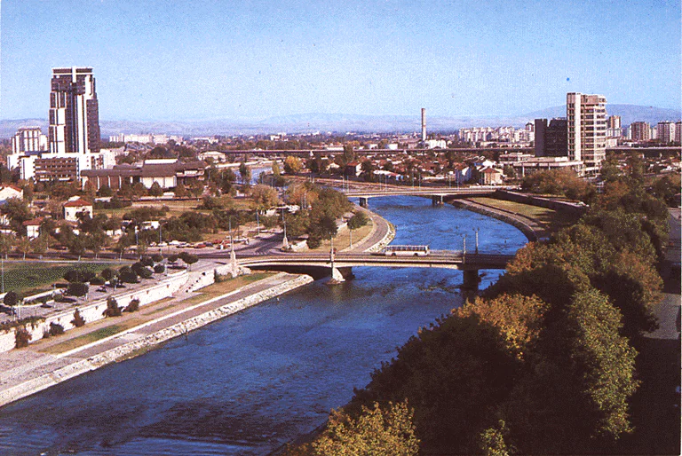
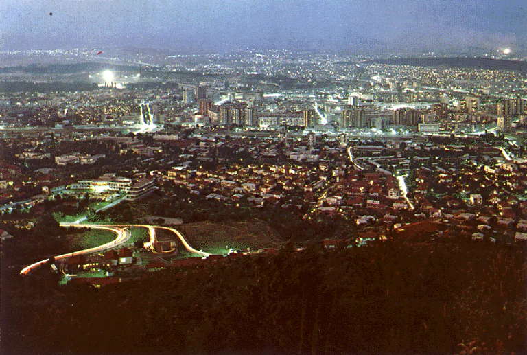

Sheshi
- Skenari
- Dimitrie Osmanli, Simon Drakul
- Kamera
- Kiro Bilbilovski
- Viti
- 1964
- Kohëzgjatja
- 00:06

Pamje e qytetit, me Kullën e Sahatit djathtas dhe Xhaminë e Gazi Isa Beut majtas, me lagjen "Saat Kulla". (vitet 1940)

Ura e betonit pranë hotelit të sotëm "Grand". Në sfond duket Kalaja e Shkupit. (vitet 1950)

Panoramë e Shkupit. (vitet 1950)

Panoramë e Shkupit. Në plan të parë është ura e betonit (pranë Grand Hotelit të sotëm), dhe në sfond Ura e Gurit, Shtëpia e Oficerëve dhe Banka Kombëtare. Lart djathtas duket Kalaja e Shkupit. Keji është rregulluar si shëtitore dhe rrugë për automjete, me gjelbërim midis tyre. (vitet 1950)

Pamje e urës së betonit (pranë Grand Hotelit të sotëm). Në plan të parë është lagjja Pajko. Në sfond është Kalaja e Shkupit, dhe djathtas saj Xhamia e Mustafa Pashës. (vitet 1950)

Shkupi, vitet 1950, me ndërtesa të reja banimi. Në mes është vendi i Tregut të sotëm të Gjelbër.

Panoramë e qytetit të Shkupit. Në plan të parë është Sheshi i Lirisë. Rruga drejt Vardarit është "Vasil Glavinov". Në cepin e parë të sheshit duket hyrja e shkollës fillore "Goce Delčev". - vitet 1950

Sheshi "Sloboda" (i Lirisë). Në sfond duken Shtëpia e Oficerëve dhe Banka Kombëtare. - vitet 1950

Qendra e Shkupit para tërmetit - rreth vitit 1960.

Fotografi panoramike nga ajri e zonës qendrore të Shkupit. Sheshi me Shtëpinë e Oficerëve, Bankën Kombëtare dhe Odën Ekonomike-Tregtare. Djathtas është posta qendrore, ndërsa poshtë majtas duket çatia e Teatrit Kombëtar. Fotografia është bërë në vitet 1950.

Fotografi panoramike e zonës qendrore të Shkupit - vitet 1950

Fotografi ajrore e zonës qendrore të qytetit para tërmetit - 1963. Midis kullave (lart djathtas), ku sot është qendra tregtare, duket kisha "Cari Kostandin dhe Carica Helenë".

Panoramë e një pjese të çarshisë së vjetër të Shkupit, vitet 1950.

Pamje e një pjese të Pazarit të Vjetër dhe çarshisë së vjetër. Mbi to duket Xhamia e Mustafa Pashës. (vitet 1950)

Pamje e qendrës së Shkupit. Ura e Gurit ende përdoret për qarkullim. Fotografia është bërë pak pas tërmetit katastrofik të 26 korrikut 1963.

Shkupi në vitin 1968. Vendi i qendrës së sotme tregtare të qytetit.

Fotografi panoramike e qendrës së qytetit. Sheshi ende përdoret si parking për automjete.
(vitet 1960)

Panoramë e pjesës qendrore të qytetit me rregullimin e Vardarit, fotografuar nga Kalaja e Shkupit. (vitet 1970). Në plan të parë janë Ura e Gurit, shtëpia e mallrave "Pelister" dhe ndërtesa të tjera.

Pamje nga Kalaja e Shkupit drejt qendrës së qytetit. Shëtitorja në bregun e djathtë të Vardarit është plot me njerëz. (vitet 1970)

Pamje nga Kalaja e Shkupit drejt qendrës së qytetit. (vitet 1970)

Pamje e bregut të majtë të Vardarit, pranë Urës së Gurit. Në pjesën e poshtme të fotografisë duket një pjesë e kishës Shën Dimitri. (vitet 1970)

Pamje e bregut të majtë të Vardarit, pranë Urës së Gurit. Në pjesën e poshtme të fotografisë duket një pjesë e kishës Shën Dimitri. (vitet 1980)

Panoramë e Shkupit. Në plan të parë është parku i vogël "Gruaja luftëtare". Poshtë majtas duken një pjesë e ndërtesës së Spitalit të qytetit dhe një pjesë e ndërtesës së kuvendit. - vitet 1980.

Parku "Gruaja luftëtare" me Qendrën tregtare të qytetit dhe ndërtesa banimi e publike të Shkupit. - vitet 1980.

Pamje e bulevardit dhe urës "Goce Delčev" me mbikalimin në plan të parë. Në sfond janë Qendra e Telekomunikacionit dhe një pjesë e kompleksit të banimit "Gradski Zid". (vitet 1980)

Pamje e zonës qendrore të qytetit. Në plan të parë janë disa nga bankat, ura "Revolucija" dhe teatri. Në sfond duken ura e betonit, Ura e Gurit dhe Qendra e Telekomunikacionit - vitet 1980.

Pamje e zonës qendrore të qytetit nga çatia e Entit të sotëm të Financave. Në largësi duket Ura e Gurit. Djathtas në kartolinë duket teatri i sotëm, dhe mbi të skicohet Kalaja e Shkupit - vitet 1980.

Shkupi në fund të viteve 1970. Ura pranë hotelit të sotëm "Grand". Majtas ngrihet ndërtesa e Radio Televizionit të Maqedonisë, djathtas ndërtesa e Entit të sotëm të Qarkullimit Pagesor.

Panoramë e Shkupit nga shpati i malit Vodno. Në plan të parë është hoteli "Panorama". (vitet 1980)

Panoramë e Shkupit natën, nga shpatet e malit Vodno. (vitet 1980)

 Ujësjellësi4 kartolina
Ujësjellësi4 kartolina Kalaja30 kartolina
Kalaja30 kartolina Urat60 kartolina
Urat60 kartolina Kej58 kartolina
Kej58 kartolina Sheshi46 kartolina
Sheshi46 kartolina Ndërtesat66 kartolina
Ndërtesat66 kartolina Kishat e krishtera19 kartolina
Kishat e krishtera19 kartolina Objektet myslimane33 kartolina
Objektet myslimane33 kartolina Shtëpia e Oficerëve29 kartolina
Shtëpia e Oficerëve29 kartolina Teatri28 kartolina
Teatri28 kartolina Stacioni hekurudhor13 kartolina
Stacioni hekurudhor13 kartolina Shkollat36 kartolina
Shkollat36 kartolina Parqet12 kartolina
Parqet12 kartolina Tregjet18 kartolina
Tregjet18 kartolina Rrugët38 kartolina
Rrugët38 kartolina Panorama I60 kartolina
Panorama I60 kartolina Panorama II30 kartolina
Panorama II30 kartolina Kolazhe55 kartolina
Kolazhe55 kartolina Përmbytjet9 kartolina
Përmbytjet9 kartolina Tërmeti27 kartolina
Tërmeti27 kartolina Shkupi 200026 kartolina
Shkupi 200026 kartolina